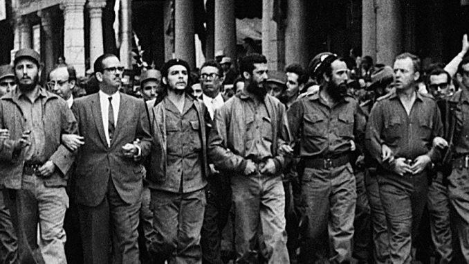

The peasant must always be helped technically, economically, morally and culturally. The guerrilla fighter will be a sort of guiding angel who has fallen into the zone, helping the poor always and bothering the rich as little as possible in the first phases of the war.

Revolution!
Looking back at the impact of Che Guevara on the Cuban revolution.